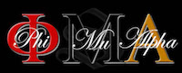

Acacia
Acacia is a men's college fraternity founded on May 12, 1904, at the University of Michigan. With dozens of chapters across North America, over 50,000 men have joined our ranks in pursuit of
Virtue, Knowledge & Trust. Built upon these principles - our members serve their communities, pursue academic and professional success, and enjoy lifelong Acacia brotherhood.
National Website »
Alpha Epsilon Pi (Colony)
Alpha Epsilon Pi (AEPi) is the world’s Jewish college fraternity, operating chapters on more than 190 college campuses in seven countries. Founded in 1913, AEPi has more than 90,000 living
alumni. While non-discriminatory, the fraternity’s mission – developing the future leaders of the Jewish communities – is demonstrated every day through acts of brotherhood, Tzedakah, social
awareness and support for Jewish communities and Israel.
National Website »
Alpha Gamma Rho
Alpha Gamma Rho isn't like other fraternities. In AGR you'll get the opportunity to experience both a social and a professional fraternity. AGR does what you expect a social fraternity to do:
socialize with other students on campus and people in the community. AGR is also like other social fraternities in that it has a strong group of members and a house you can live in during your
college years. But AGR is more than just one of those strictly social fraternities; it is also a professional fraternity.
National Website »
Alpha Phi Alpha

The objectives of this fraternity shall be: to stimulate the ambition of its members; to prepare them for the greatest usefulness in the causes of humanity, freedom, and dignity of the
individual; to encourage the highest and noblest form of manhood; and to aid downtrodden humanity in its efforts to achieve higher social, economic and intellectual status.
National Website »
Alpha Psi Lambda (Co-Ed Fraternity)
Alpha Psi Lambda was established on February 11, 1985 at The Ohio State University and has grown to 31 chapters and 4 colonies in 14 states with 2,800 members. We believe in the concept
Familia to create a support network for our members while creating the real world experience of working with all genders. Lambda Chapter at Illinois State University was established September
20, 1998 and has grown to over 150 members.
National Website »
Alpha Sigma Phi
Found at Yale University on December 6, 1845, Alpha Sigma Phi continues to be the organization of choice for collegiate men founded on the values of Silence, Charity, Purity, Honor, and
Patriotism.
National Website »
Farmhouse
FARMHOUSE is proud of our agricultural heritage and celebrates our origins, but is so much more. Just as the face of agriculture has diversified, so has our membership, our programs,
the majors of our students and the careers our alumni pursue.
National Website »
Kappa Alpha Psi
Kappa Alpha Psi ®, a college Fraternity, was born in an environment saturated in racism. The state of Indiana became the 19th state of the Union in 1816 and it founded Indiana University
in Bloomington four years later.
National Website »
Omega Delta Phi (Colony)
The history of Omega Delta is that of change. During the fall semester of 1996 at the University of Illinois at Champaign-Urbana, a group of friends decided to join a fraternity.
A companion, who was already a member of an existing fraternal organization, asked the men to unite with him and become part of his fraternity.
National Website »
Phi Beta Sigma
Phi Beta Sigma Fraternity was founded at Howard University in Washington, D.C., January 9, 1914, by three young African-American male students. The Founders, Honorable A. Langston Taylor,
Honorable Leonard F. Morse, and Honorable Charles I. Brown, wanted to organize a Greek letter fraternity that would truly exemplify the ideals of brotherhood, scholarship, and service.
National Website »
Phi Gamma Delta (FIJI)
Phi Gamma Delta unites men in enduring friendships, stimulates the pursuit of knowledge, and builds courageous leaders who serve the world with the best that is in them.
National Website »
Phi Kappa Psi
One hundred and sixty-five years ago, William Henry Letterman and Charles Page Thomas Moore, two students at Jefferson College in foothills of Western Pennsylvania, were nursing and
watching over their stricken friends during an epidemic of typhoid fever at the college. Through the long night vigils, the two decided that they should establish a group that was founded
upon the great joy they received from selflessly helping others.
National Website »
Phi Mu Alpha Sinfonia

One hundred and sixty-five years ago, William Henry Letterman and Charles Page Thomas Moore, two students at Jefferson College in foothills of Western Pennsylvania, were
nursing and watching over their stricken friends during an epidemic of typhoid fever at the college. Through the long night vigils, the two decided that they should establish a group
that was founded upon the great joy they received from selflessly helping others.
National Website »
Pi Kappa Phi
On a quiet December evening in 1904 in Charleston, S.C., three friends—Andrew Kroeg, Simon Fogarty and Harry Mixson—made a choice to lead. Those three men chose to start their own fraternity.
The three grew to seven; seven grew to eight; eight grew to 11. From the College of Charleston, they spread to nearby Presbyterian in 1907—and then to California in 1909.
National Website »
Sigma Lambda Beta
Eighteen men gathered at the University of Iowa and founded Sigma Lambda Beta. These men came from all sorts of backgrounds and exemplify what Sigma Lambda Beta stands for today.
National Website »
Sigma Nu
Sigma Nu's past is a proud and colorful one. Founded by three cadets at the Virginia Military Institute in a period of civil strife known as the Reconstruction, Sigma Nu represented a
radical departure from the times.
National Website »
Sigma Pi (Colony)
On January 26, 1897, Miss Charlotte N. Malotte, the professor of Latin and French, spoke to a student group at the chapel hour. She spoke on the subject of ‘College Fraternities’ which
sparked the interest of several students. Then, on the afternoon of February 26, a new fraternity had its first meeting. When, after a long session, the meeting adjourned, a literary society
had been born, though it was yet unnamed.
National Website »